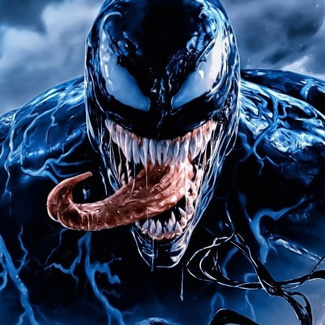

About Venom
The symbiote that later became known as Venom was created by the dark elder god Knull on a desolate, nameless planet where it saved a group of newborn baby rodentoid aliens by bonding to them and transforming them into apex predators.
Venom and the other symbiotes
Venom's Characteristics
- Superhuman Strength
- Regenerative Healing Factor
- Telepathy
Venom's Weaknesses
The Venom symbiote has two major weaknesses - sound and fire. Loud noises cause the symbiote to writhe in pain. That's how Peter Parker originally freed himself of the symbiote. A tolling church bell drove the two apart and sent the fleeing symbiote straight into the arms of an unsuspecting Eddie Brock. Even now, sonic weapons tend to be the first line of defense against Venom and his fellow symbiotes. Click on the link below to read more about his weaknesses: